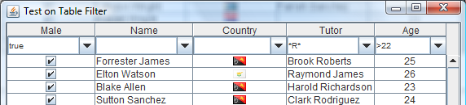
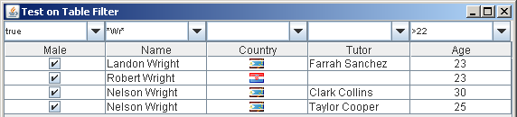
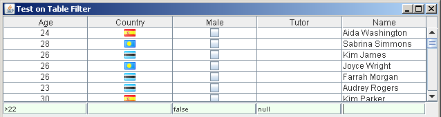
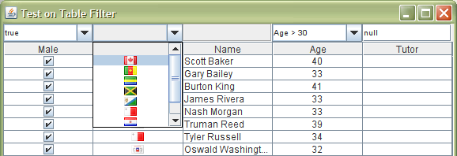

TableFilterHeader
TableFilterHeader is the main Gui component in the TableFilter library; it is a set of filter editors located just atop a table looking like in the figure below:

The header can be automatically be placed inline, like in the previous figure, or just above the table:

Obtaining such results is simple, just by coding:
TableFilterHeader filterHeader = new TableFilterHeader(table);
This header places together a set of filter editors, one per table's column, and is responsible to resize / move them as the table's columns change their layout.
The real value of this component relies on the filter editors used. The two figures above show the main available looks for those editors: as JTextField or JComboBox.
Basic usage
The TableFilterHeader class is placed in the package net.coderazzi.filters.gui
Setting up the TableFilterHeader is as simple as:
TableFilterHeader filterHeader = new TableFilterHeader(table);
Writing the previous code will use the default editor; the TableFilterHeader allows setting up its mode, which can be one of:
- NONE: no editor at all.
- SLIM: the parsing editor based on a JTextField shown above.
- BASIC: the default editor, is a parsing editor based on a JComboBox, shown also above.
- CHOICE: a fixed choice editor, where the options are taken from the table column values.
Setting up a different mode requires code such as:
filterHeader.setMode(TableFilterHeader.EditorMode.CHOICE);
Please note that each column could eventually use different editor types. In special, mixing the BASIC editor and the CHOICE can be in cases essential, to take advantage of the parsing capabilities of the former editor and the configuration possibilies of the later.
By default, the location of the filter is inline the table, just below the table header. It can be modified with:
filterHeader.setPosition(TableFilterHeader.Position.TOP);
Placing manually the header
On versions pre 1.3, the user had to place the header manually in the Gui. This option is still available on later versions: when the user specifically includes the header in some Gui container, the default behaviour to automatically setup the filter header by the table header is deactivated.
To setup programatically the TableFilterHeader on the Gui, for example to place it as a footer below the table, two steps are required: including the header in the global layout of the application, and attaching it to the associated table.
In this case, the header should be located just above or below the table. Placing it anywhere else misses the point of this component, as the columns will resize and move automatically as the user modifies the table columns layout. In this case, it is better to consider using the editors as standalone components.
An example of code setting up this component is:
JPane pane=new JPane(new BorderLayout()); JScrollPane scrollPane = new JScrollPane(); JTable table = new JTable(); TableFilterHeader filterHeader = new TableFilterHeader(); scrollPane.setViewportView(table); pane.add(scrollPane, BorderLayout.CENTER); pane.add(filterHeader, BorderLayout.SOUTH);
Attaching now the filter header to the table is all that is needed to have a working filter
filterHeader.setTable(table);

The image above shows the result of the previous coding. Nevertheless, the layout only makes sense when the table is set to be resized automatically: if the associated JScrollPane can scroll horizontally, the header will not scroll when the previous code is used.
Advanced usage of the TableFilterHeader
The component is quite simple, its interface just tries to simplify the controlling of all the filter editors behind. The api documentation for this component describes its functionality.
The TableFilterHeader creates automatically filters of the defined mode, but it is possible to specify each column's editor separately. The following methods are the simples ways to create the library-defined editors:
- setSlimFilterEditor Creates, on the passed column, an editor of type SLIM , a text parsing filter based on JTextField.
- setBasicFilterEditor Creates, on the passed column, an editor of type BASIC , a text parsing filter based on JComboBox.
- setChoiceFilterEditor Creates, on the passed column, an editor of type CHOICE ,a fixed-choice filter based on JComboBox.
It is also possible to create custom filter editors, setting them via the method setFilterEditor. In this case, the editor must implement the interface ITableFilterEditor
The figure below shows a test, supplied with source distribution of this library, showing all the included editors:
